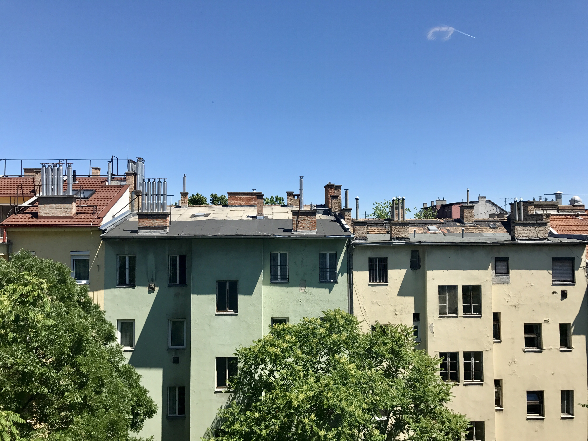
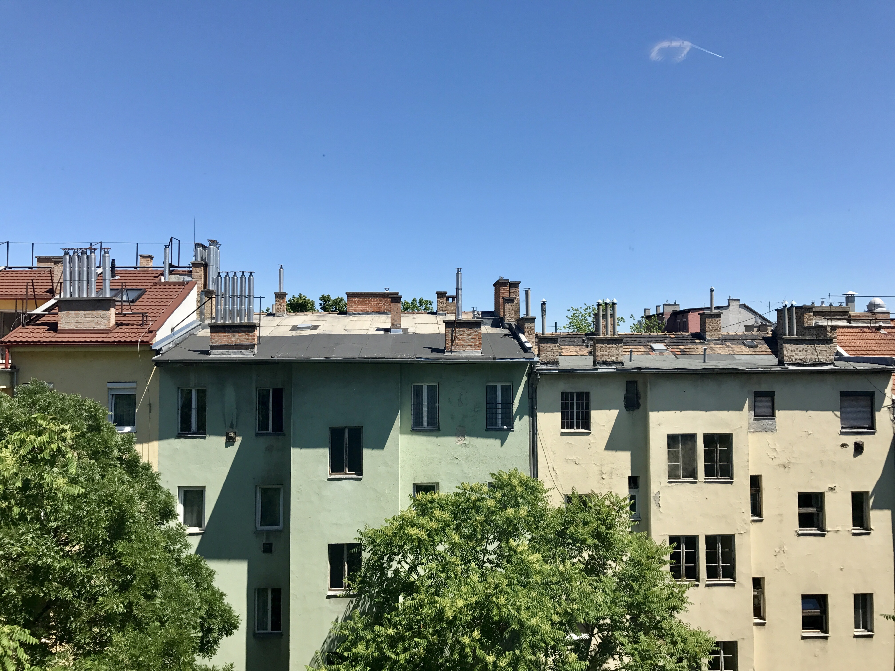

Kuva: Thaimaan yksi lukuisista kauniista rannoista.
Kuva: Unkari Budapest, Pestin puolelta läheltä Unkarin parlamenttitaloa.

Kuva otettu kuumailmapallosta parvekkeen ikkunan heijastuta hyödyntäen.
Tutustu kuumailmapalloihin täältä
Maisemakuvista saa aina hienoja taustakuvia!
Kuva: Thaimaan yksi lukuisista kauniista rannoista.
Kuva: Unkari Budapest, Pestin puolelta läheltä Unkarin parlamenttitaloa.
Kuva otettu kuumailmapallosta parvekkeen ikkunan heijastuta hyödyntäen.
Tutustu kuumailmapalloihin täältä
Olen leiponut ja kuvannut paljon erilaisia leivonnaisia.
Kuva: Thaimaan yksi lukuisista kauniista rannoista.
Kuva: Thaimaan yksi lukuisista kauniista rannoista.

Kuvaaminen on hauska harrastus.
Kuvailen myös näitä aiheita:
Jos vielä haluat nähdä lisää muiden hienoja kuvia tässä linkki vuoden 2023 palkituista kuvista.
Parhaat iPhone:lla palkitut kuvat.